Michael Martin est un professionnel de la sécurité maritime cumulant des décennies d'expérience en sauvetage en mer, en soutien à la production cinématographique et en intervention d'urgence. Il a collaboré étroitement avec la Garde côtière canadienne et est un ancien ambulancier paramédical possédant une expérience en soins intensifs. Son parcours professionnel, à la croisée des opérations maritimes, de la logistique de production cinématographique et de la coordination de la sécurité, fait de lui une ressource de confiance pour les opérations complexes et à haut risque. Son entreprise fournit des services médicaux et de sauvetage pour un circuit automobile historique de Mont-Tremblant depuis plus de 40 ans.
Services
Sauvetage maritime
Depuis plus de 25 ans, Pro Motion Marine offre des services professionnels de sauvetage et d'assistance maritime, notamment la récupération de bateaux coulés et de navires échoués. L'entreprise dispose d'un vaste stock d'équipements, notamment des coussins de levage, de nombreuses pompes, du gréement et des ancres. Elle possède et exploite une flotte de six navires certifiés par Transports Canada, en plus d'un nombre important de navires appartenant à des tiers. L'entreprise possède une vaste expérience de travail en collaboration avec la Garde côtière canadienne, les assureurs maritimes et les experts. À ce jour, elle affiche un taux de réussite de 100 % en matière de récupération. Forte de 25 ans d'expérience dans l'utilisation de la technologie avancée du sonar à balayage latéral double, Pro Motion Marine est fière de son bilan de sécurité impeccable et de son engagement à limiter les dommages causés aux navires qu'elle prend en charge.
Équipement de sauvetage maritime
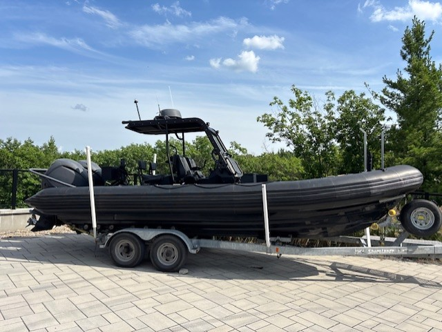
Large Zodiac Boat
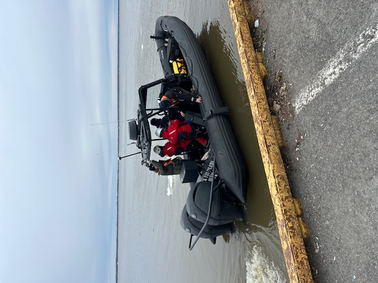
Zodiac Boat
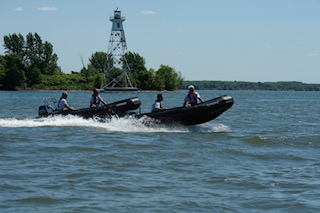
C4 / C5 Safety Boat
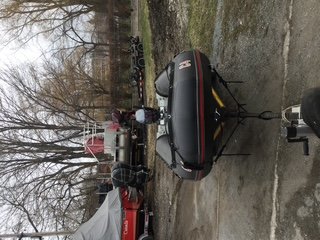
C4 Safety Boat
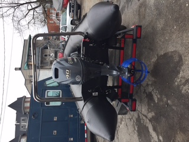
C5 Safety Boat
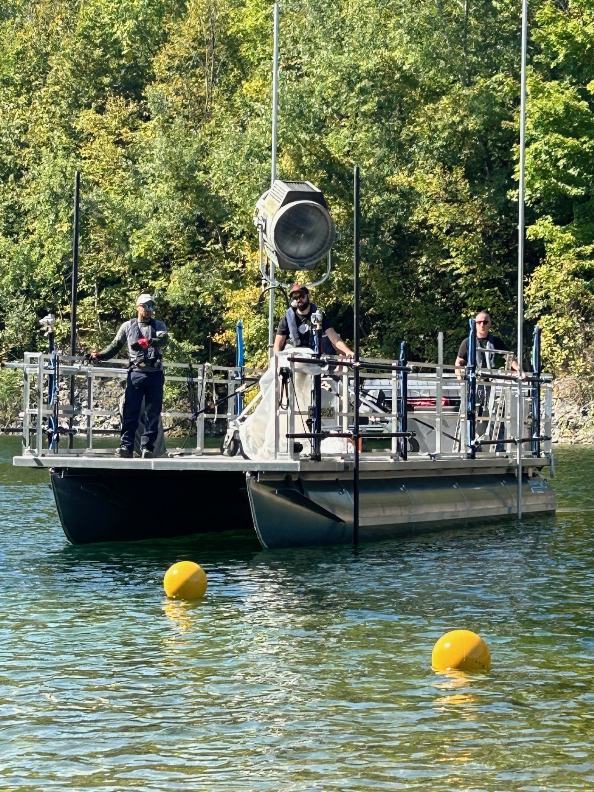
Pontoon Boat
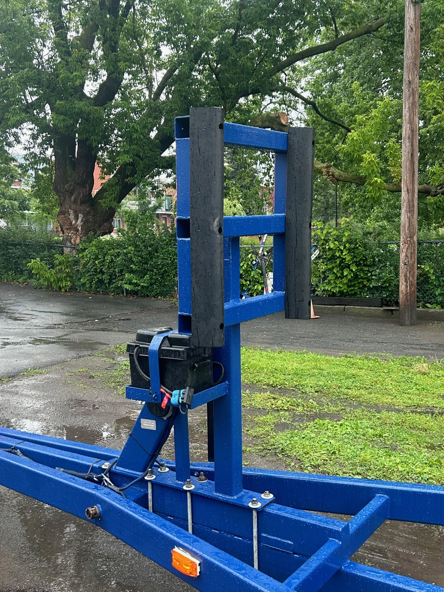
Boat Trailer
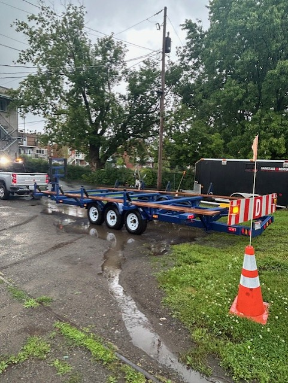
Boat Trailer
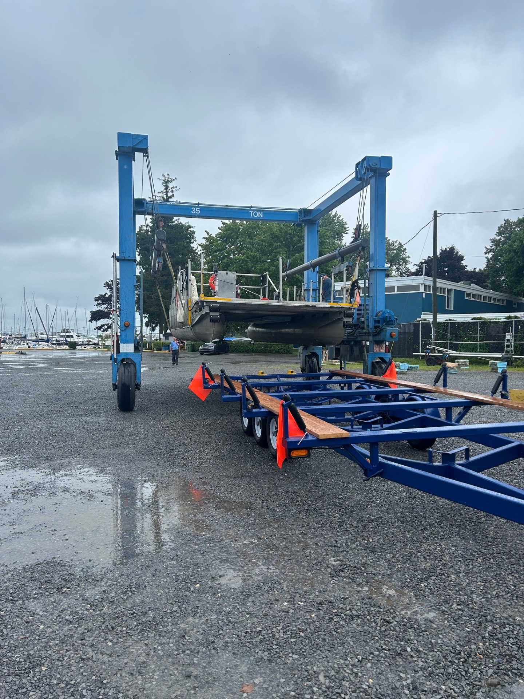
Boat Trailer
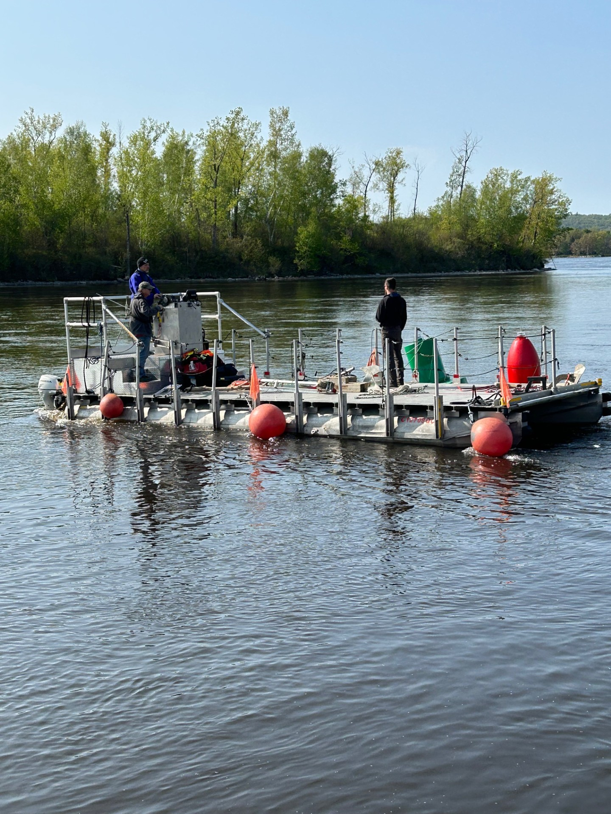
Buoy
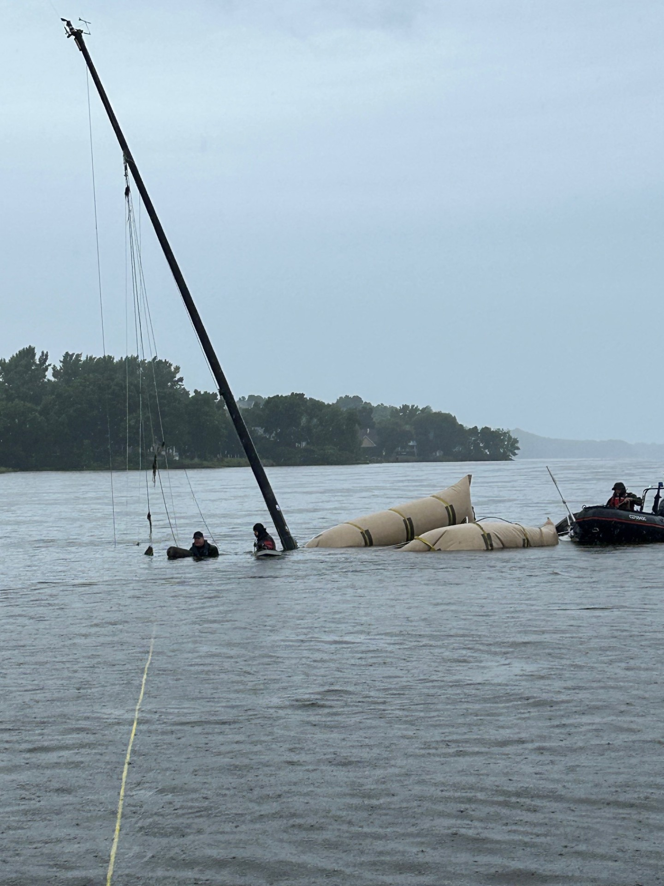
Lift Bag
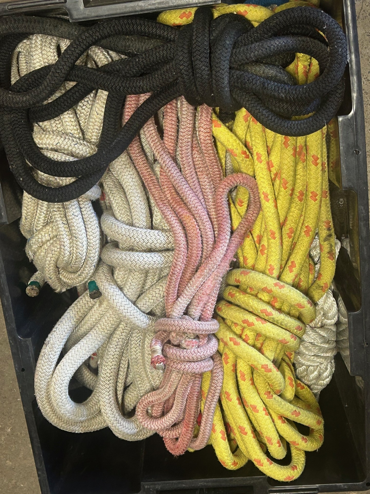
Rope and Rigging
Soutien maritime à la production cinématographique
Michael Martin et Pro Motion Marine ont fourni des services de soutien maritime et de coordination de la sécurité pour des productions cinématographiques, tant de grandes productions américaines que de plus petites productions québécoises, notamment :
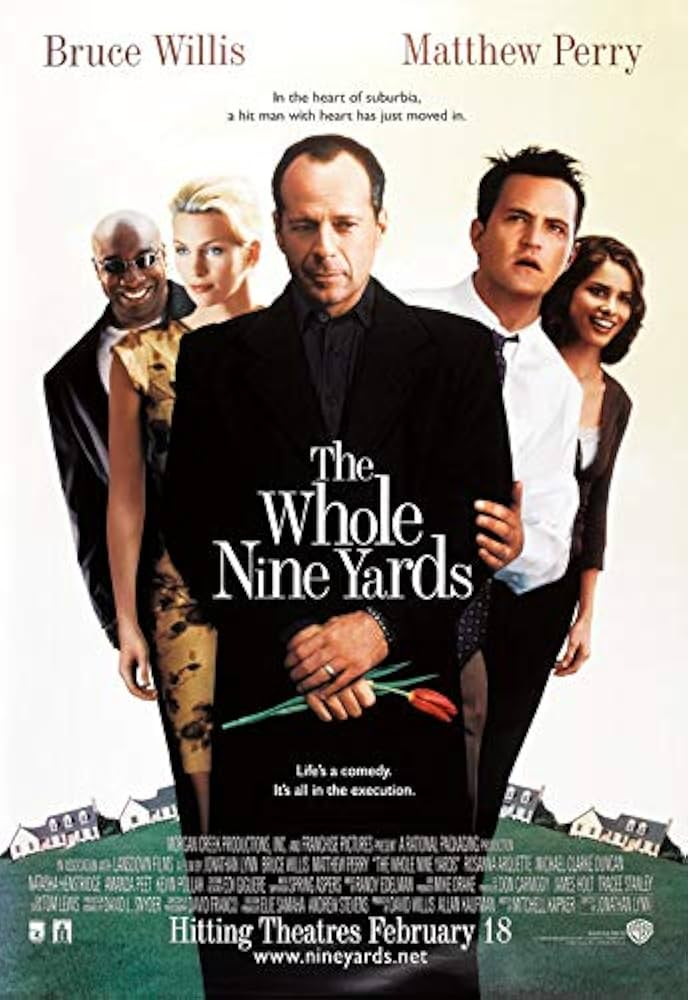
The Whole Nine Yards
Timeline
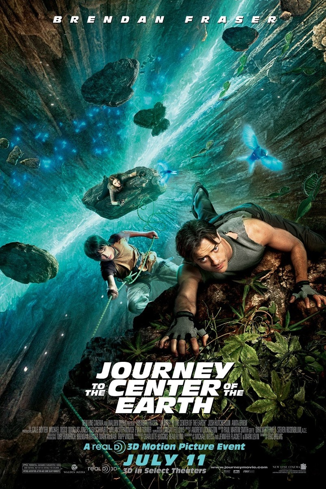
Journey to the Center of the Earth

The Curious Case of Benjamin Button
Barney's Version
Father and Guns 2
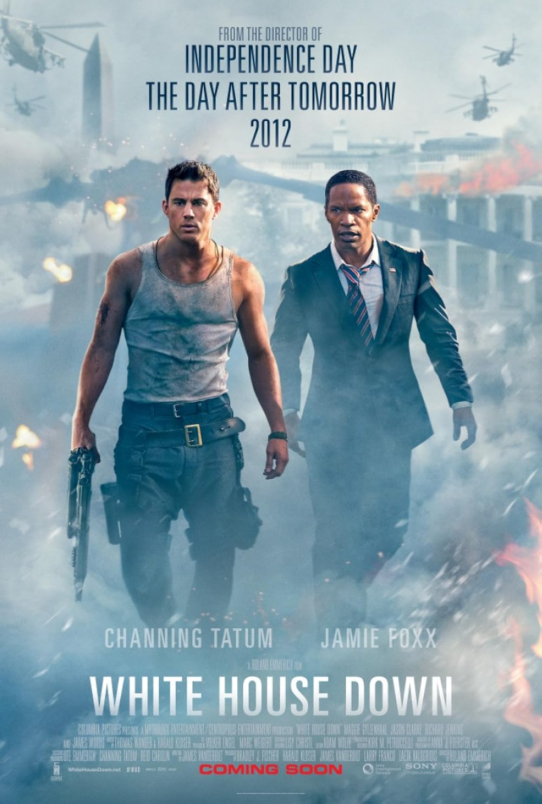
White House Down
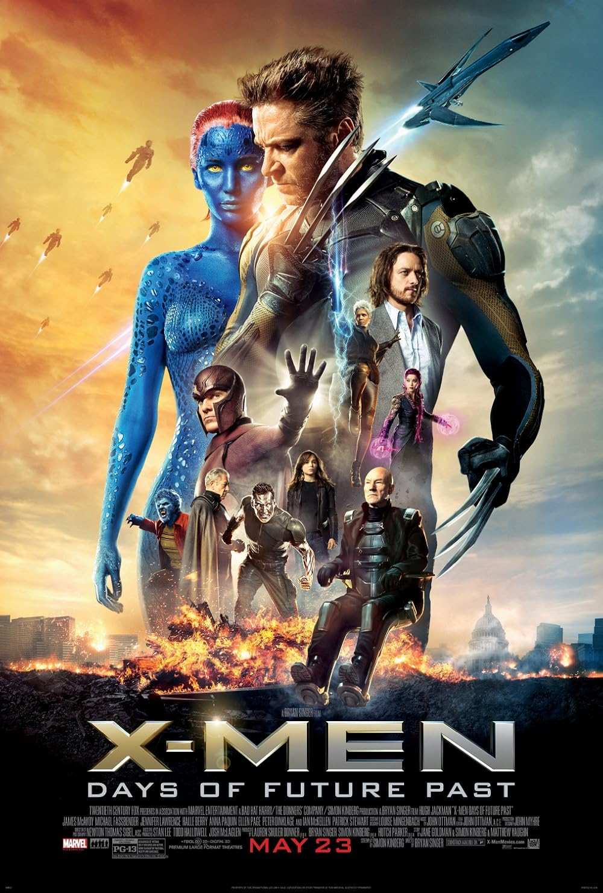
X-Men: Days of Future Past

X-Men: Dark Phoenix
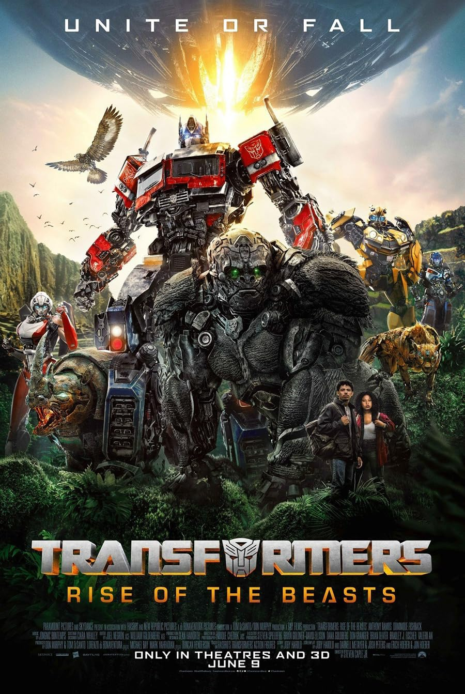
Transformers: Rise of the Beasts
Nos services comprennent des bateaux de tournage, des bateaux d'assistance certifiés par Transports Canada, la coordination de la sécurité maritime et des services de consultation maritime. Nous collaborons généralement avec la production pour les formalités administratives auprès du studio et de la CNESST.
Michael Martin propose des services de conseil en sécurité pour les productions cinématographiques et télévisuelles, notamment en matière de sécurité maritime, incendie, explosifs et sauvetage de véhicules. Fort d'une vaste expérience en intervention d'urgence, sécurité maritime et gestion des risques sur les plateaux de tournage, il propose des services de planification de la sécurité, de coordination des urgences et d'aide à la décision opérationnelle afin de garantir des environnements de travail sûrs et conformes, tant sur l'eau que sur terre.
Équipement de production cinématographique
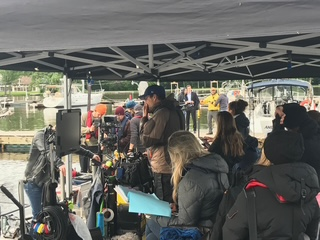
Camera Boat
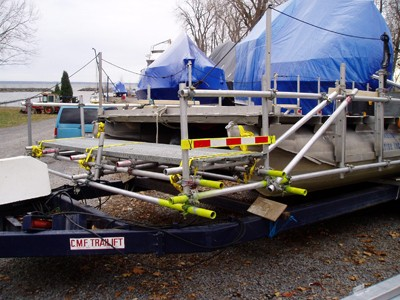
Camera Boat
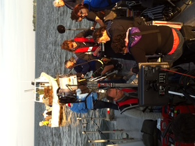
Camera Boat
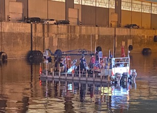
Camera Boat
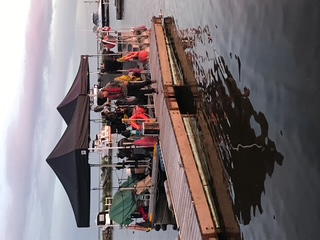
Camera Boat
Large Zodiac Boat
Zodiac Boat
C4 / C5 Safety Boat
C4 Safety Boat
C5 Safety Boat
Pontoon Boat
Boat Trailer
Boat Trailer
Boat Trailer
Buoy
Rope and Rigging
À propos de Michael Martin
Licences et certifications
- Programme de conformité des petits navires commerciaux avec certification de Transports Canada
- Membre de l'IATSE 514-AQTIS depuis plus de 30 ans
- Capitaines certifiés